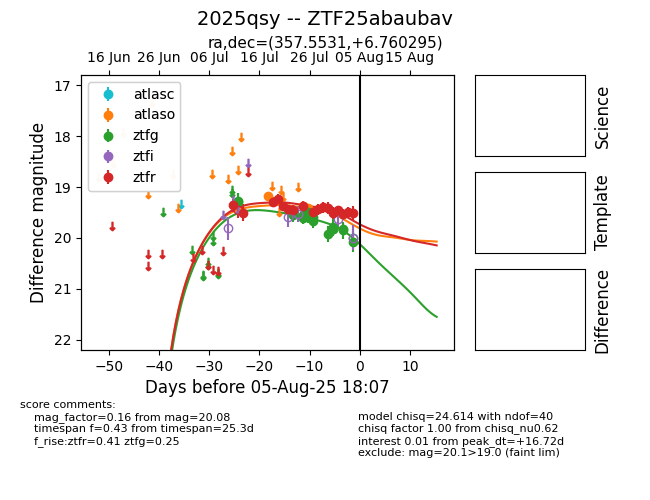

Target 2025qsy at 2025-08-05 18:07, see:
FINK: fink-portal.org/2025qsy
Lasair: lasair-ztf.lsst.ac.uk/objects/2025qsy
ALeRCE: alerce.online/object/2025qsy
TNS: wis-tns.org/object/2025qsy
YSE: ziggy.ucolick.org/yse/transient_detail/2025qsy
alt names
ZTF25abaubav (ztf,fink)
2025qsy (tns,yse)
coordinates:
equatorial (ra, dec) = (357.5531,+6.76030)
galactic (l, b) = (97.1006,-53.01315)
photometry
last atlaso=19.41, ztfg=20.08, ztfr=19.52
3 atlaso, 17 ztfg, 18 ztfr detections
